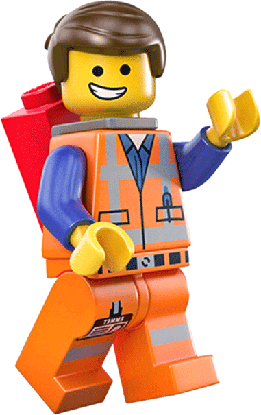
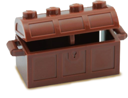

El cambio como parte de la organización

Una correcta planificación y facilitación supone dar apoyo a aquellos que formn parte del cambio para que lo visualicen, interioricen y se impliquen.
La vida es oscuridad cuando no hay impulso y todo impulso es ciego cuando no hay conocimiento y todo saber es inútil cuando no hay trabajo y todo trabajo es rutinario si no existe el cambio.